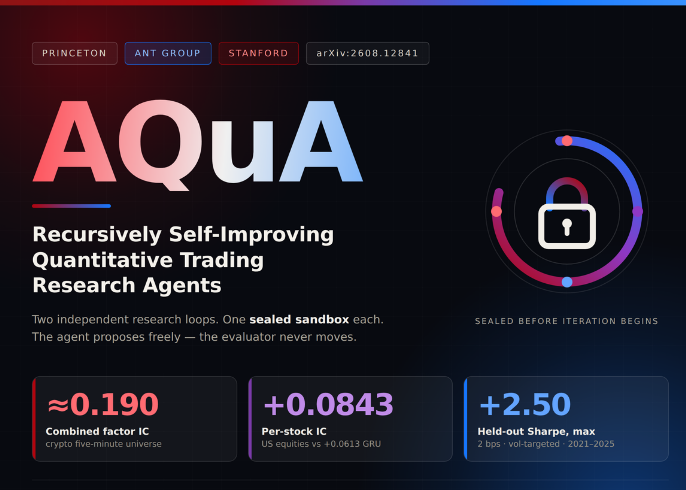

09 MarkTechPost 게시일 2026.09.01
프린스턴·앤트·스탠퍼드, 누수 막는 퀀트 AI AQuA 제안

금융 모델은 성능 숫자보다 검증 방식이 더 중요할 때가 많다. 실험을 자동화한 에이전트는 편리하지만, 잘못된 가설이나 누수된 변수를 성공 사례로 저장하면 오류를 반복 확대할 수 있다. AQuA는 이 문제를 막으려는 연구용 프레임워크다. 연구팀은 에이전트의 탐색 자유는 남기고, 평가 경계는 고정하는 방식으로 접근했다.
핵심 브리핑
AQuA는 에이전트가 스스로 실험을 짜며 생기는 데이터 누수를 구조적으로 막도록 설계됐다. 프린스턴대, Ant Group, 스탠퍼드대 연구팀이 만들었다. 하나는 암호화폐에서 상징형 알파 팩터를 찾는다. 다른 하나는 미국 주식 장중 수익률을 예측하는 시계열 모델을 다듬는다.
연구팀은 두 시스템이 에이전트, 메모리, 후보 공간, 연구 상태를 공유하지 않게 분리했다. 평가는 고정한 채 연구 과정만 반복 개선하도록 설계했다. 에이전트는 자유롭게 모든 것을 바꾸지 못한다. 팩터 식이나 설정 변경 한 건만 내보낼 수 있다.
1부는 6개 에이전트 파이프라인으로 팩터를 찾는다. 모든 전달은 AI Manager를 거친다. 연구팀은 이 구조가 실행 기록을 감사 가능하게 만든다고 설명했다. 팩터는 식으로 바로 제출하지 않는다. 먼저 가설, 작동 메커니즘, 예상 방향, 반증 조건을 제안한다.
2부는 미국 주식의 향후 30분 수익률을 예측한다. 학습은 2010년부터 2019년까지 썼다. 2020년은 어떤 단계도 건드리지 않는 봉쇄 구간으로 뒀다. 2021년부터 2025년까지는 손대지 않은 테스트 데이터로 남겼다.
- 암호화폐 5분봉 구간에서 20회 연구 반복 뒤 결합 검증 Spearman IC는 약 0.190을 기록했다.
- 비교 대상은 adapted AlphaMemo 0.171, adapted AlphaGen 0.151, LSTM 0.137, LightGBM 0.106, Alpha158 방식 기준선 0.075였다.
- 단일 팩터 IC는 0.026에서 0.037 사이였다.
- 주식 모델의 종목별 raw IC는 ridge 0.0251, LGB 0.0397, xLSTM 0.0434, LSTM 0.0535, GRU 0.0613, hybrid 0.0843이었다.
- hybrid는 최고 기준선인 GRU보다 절대값 0.0230, 상대 37.5% 높았다.
- 주식 롱숏 포트폴리오는 양방향 비용 2bp 기준으로 섹터 중립화 뒤 샤프 2.15를 기록했다.
- 인과적 변동성 타기팅을 얹으면 샤프는 2.50이었다.
- 과거 데이터만으로 모든 매개변수를 고르는 완전 인과적 워크포워드에서도 샤프 2.00을 기록했다.
- 연도별 샤프는 2021년부터 2025년까지 1.7, 3.5, 1.9, 1.8, 2.7이었다.
연구팀은 1부와 2부의 IC 계산 방식이 다르다고 밝혔다. 두 수치는 서로 직접 비교하면 안 된다고 논문에 적었다.
| 구분 | 방법 | 지표 | 값 | 비고 |
|---|---|---|---|---|
| 1부 | AQuA 팩터 탐색 | 결합 검증 Spearman IC | 약 0.190 | 암호화폐 5분봉, 20회 연구 반복 |
| 1부 비교 | adapted AlphaMemo | 결합 검증 Spearman IC | 0.171 | 같은 맥락의 비교 |
| 1부 비교 | adapted AlphaGen | 결합 검증 Spearman IC | 0.151 | 같은 맥락의 비교 |
| 1부 비교 | LSTM | 결합 검증 Spearman IC | 0.137 | 같은 맥락의 비교 |
| 1부 비교 | LightGBM | 결합 검증 Spearman IC | 0.106 | 같은 맥락의 비교 |
| 2부 | hybrid | 종목별 raw IC | 0.0843 | 미국 주식 장중 데이터 |
| 2부 비교 | GRU | 종목별 raw IC | 0.0613 | 최고 기준선 |
| 2부 | 섹터 중립화 포트폴리오 | 샤프 | 2.15 | 양방향 비용 2bp |
| 2부 | 변동성 타기팅 적용 | 샤프 | 2.50 | 인과적 오버레이 |
| 2부 | 완전 인과적 워크포워드 | 샤프 | 2.00 | 모든 매개변수 과거 데이터만 사용 |
방법과 결과
핵심 기법은 평가 경계를 미리 고정하는 것이다. 데이터 분할, 특성 정의, 라벨 정의, 평가기를 반복 시작 전에 정한다. 에이전트는 그 안에서만 움직인다. 연구팀은 이를 비대칭 자유라고 불렀다.
1부에서는 시계열 연산자가 과거 구간만 읽는다. 횡단면 연산자는 현재 시점만 읽는다. 연구팀은 이 조합으로 시간 인과성을 닫아 누수 가능성을 줄였다고 설명했다. 실행 중에는 방향 보정, 반증 기반 신념 갱신, 다음 탐색을 위한 실행 간 메모리의 세 피드백 고리가 돈다.
2부에서는 가설 하나를 설정 변경 한 건으로 제한했다. 구조, 손실함수, 샘플러, 옵티마이저 가운데 한 요소를 바꾸면 한 변형만 만든다. 이렇게 해야 변형끼리 공정하게 비교할 수 있다. 보고한 실험에서는 멀티스케일 1차원 합성곱 앞단과 attention 백본, 횡단면 혼합 단계, 게이트 결합, 종목별 판독부를 쓴 하이브리드 구조를 사용했다.
한계도 적었다. 단일 가격·거래량 특성만으로는 신호가 약했다. 가장 강한 단일 특성은 5분 수익률로 -0.031이었다. ridge 조합도 +0.025에 그쳤다. 연구팀의 주장은 특정 한 식의 우수성보다, 누수 방지형 연구 장치가 반복 실험을 어떻게 통제했는지에 있다.
업계의 움직임
공개된 발췌문에는 고객 도입이나 경쟁사 대응은 없다. 아직 공개된 반응은 확인되지 않았다.
시사점과 체크포인트
우리 회사가 AI를 리서치 자동화에 붙인다면, 먼저 볼 것은 모델 종류보다 검증 경계다. 실험 생성 에이전트가 평가 데이터나 운영 지표를 우회해 보지 못하게 설계해야 한다. 프롬프트 지시만으로는 부족하다.
검토할 체크포인트는 분명하다.
- 데이터팀은 학습, 검증, 테스트 구간을 물리적으로 분리했는지 본다.
- 모델링팀은 에이전트 출력 형식을 제한할 수 있는지 점검한다.
- 리스크관리팀은 백테스트 재현성과 실행 로그 보존 방식을 확인한다.
- 보안팀은 에이전트가 파일, 네트워크, 평가 저장소에 접근하는 권한을 분리했는지 본다.
수치 해석에도 주의가 필요하다. 이 결과는 연구 환경에서 나온 값이다. 실제 운용 성과나 거래 비용 확대 구간에서도 유지되는지는 여기 발췌만으로 확인할 수 없다. 1부와 2부의 IC 정의가 다르다는 단서도 함께 봐야 한다.
주요 용어
원문 정보
제목: 01 PRINCETON / ANT GROUP / STANFORD Researchers from Princeton, Ant Group and Stanford Introduce AQuA: A Two-Part Agentic Framework for Autonomous Factor Discovery and Model Dev...
게시일: 2026.09.01